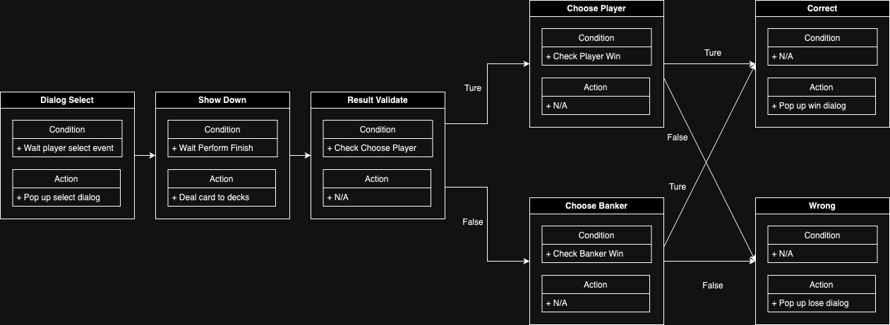
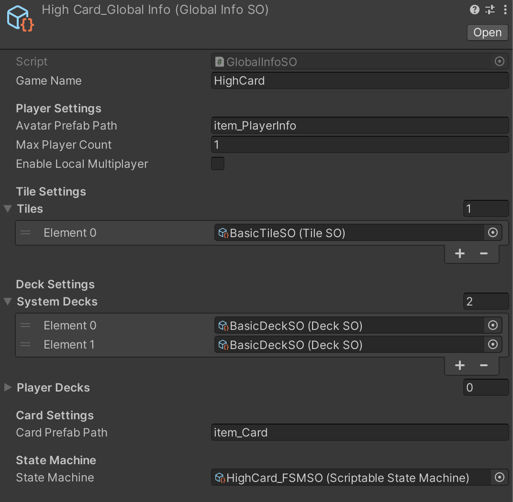
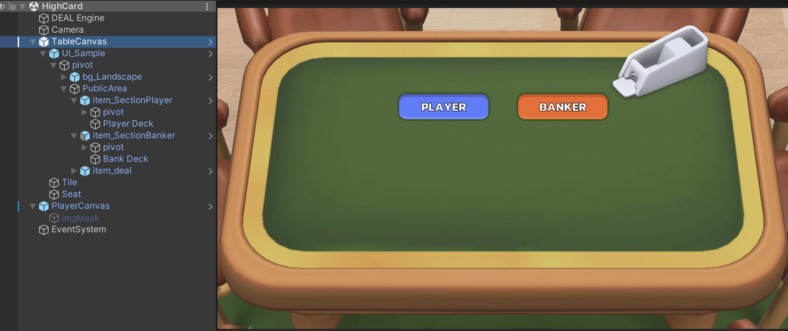

Quick Start
This guide will walk you through the essential steps to create a High Card game in Unity using the DEAL Toolkit. By the end, you'll have a fully functional card game and a solid understanding of how to use the DEAL framework effectively.
Define High Card FSM

In this High Card game, the player guesses who will win—either the Player or the Banker. After the cards are revealed, the game checks if the player's guess was correct.
You can either create a new FSM Scriptable Object (SO) or use the provided HighCard_FSMSO located in Sample/DataSO.
The FSM consists of 7 states, each with specific functions, explained below:
1. Dialog Select State
- Overview: The player selects who they think will win: Player or Banker. This state manages the selection process.
Steps:
- Show a dialog for the player to make their choice. Create an action Scriptable Object (SO) using
ShowDialogAction. Reference theSelectWinnerDialog_Actionand add it to the Entry Actions of this state. - Use the
ChoosePlayer_ConditionSO to check if the player selected "Player" (index 0).
2. Show Down State
- Overview: This state reveals the cards and determines the winner for the current round.
Steps:
Deal 1 card to both the Player and Banker. Add the following 4 actions to the Entry Actions:
TileDraw1ActionTileDealToPlayer_PostActionTileDraw1ActionTileDealToBanker_PostAction
Add the
CountDown3sActionto wait for the card flip animation to complete (3 seconds).Unlock the FSM using
EndOfSystemLock_Conditionafter 3 seconds.
3. Result Validate State
- Overview: This state validates whether the player's selection matches the actual result of the showdown.
Steps:
- Use
ChoosePlayer_ConditionSO to verify if the player’s selection (Player or Banker) was correct.
4. Choose Player State
- Overview: This state checks if the Player’s card value is higher than the Banker’s, determining if the guess was correct.
Steps:
- Use the
PlayerWin_ConditionSO to check if the Player’s card score is higher than the Banker’s.
5. Choose Banker State
- Overview: This state checks if the Banker’s card value is higher than the Player’s, determining if the Banker wins.
Steps:
- Use the
BankerWin_ConditionSO to check if the Banker’s card score is higher than the Player’s.
6. Correct State
- Overview: If the player guessed correctly, this state triggers a dialog displaying the winning result.
Steps:
- Add the
ShowCorrectDialogActionSO to the Entry Actions to display the correct result.
7. Wrong State
- Overview: If the player guessed wrong, this state triggers a dialog displaying the losing result.
Steps:
- Add the
ShowWrongDialogActionSO to the Entry Actions to display the incorrect result.
Global Info Configuration

The Global Info Scriptable Object (SO) holds the global configuration settings for the game, including details like the game name, FSM, player settings, and any necessary global variables.
Steps:
- Create a Global Info SO by right-clicking in the Project window and selecting
DealToolkit > Global Info. Name itHighCard_GlobalInfo. - Set the Max Player Amount to 1 (for a single-player game).
- Set the Tile/Deck Settings:
- Use one
BasicTileSOfor drawing cards. - Use two
BasicDeckSO(one for Player, one for Banker) for placing cards.
- Use one
- Set the Avatar Prefab Path and Card Prefab Path:
- For avatars, use the
item_PlayerInfoprefab. - For cards, use the
item_Cardprefab.
- For avatars, use the
- Set the State Machine to
HighCard_FSMSOfor the game FSM logic.
Scene Management

Steps:
- Create a new scene and add the following prefabs from the sample resources folder:
DealEnginePrefabTable CanvasPrefabPlayer CanvasPrefab
- Assign the
HighCard_GlobalInfoSO to the Global Info SO reference in theDealEnginecomponent. - Assign the Table Canvas to the
Tablereference in theDealEnginecomponent. - Assign the Player Canvas to the
Dialog Managerreference in theViewManagercomponent.
Congratulations! You’ve successfully set up the High Card game using the DEAL Toolkit. Your game is now ready to play, and you’ve learned how to configure both the FSM and the global game settings.